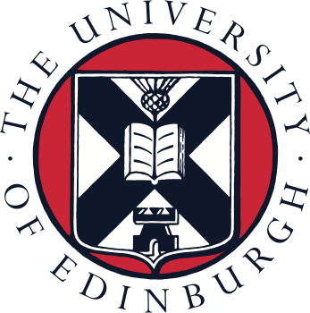
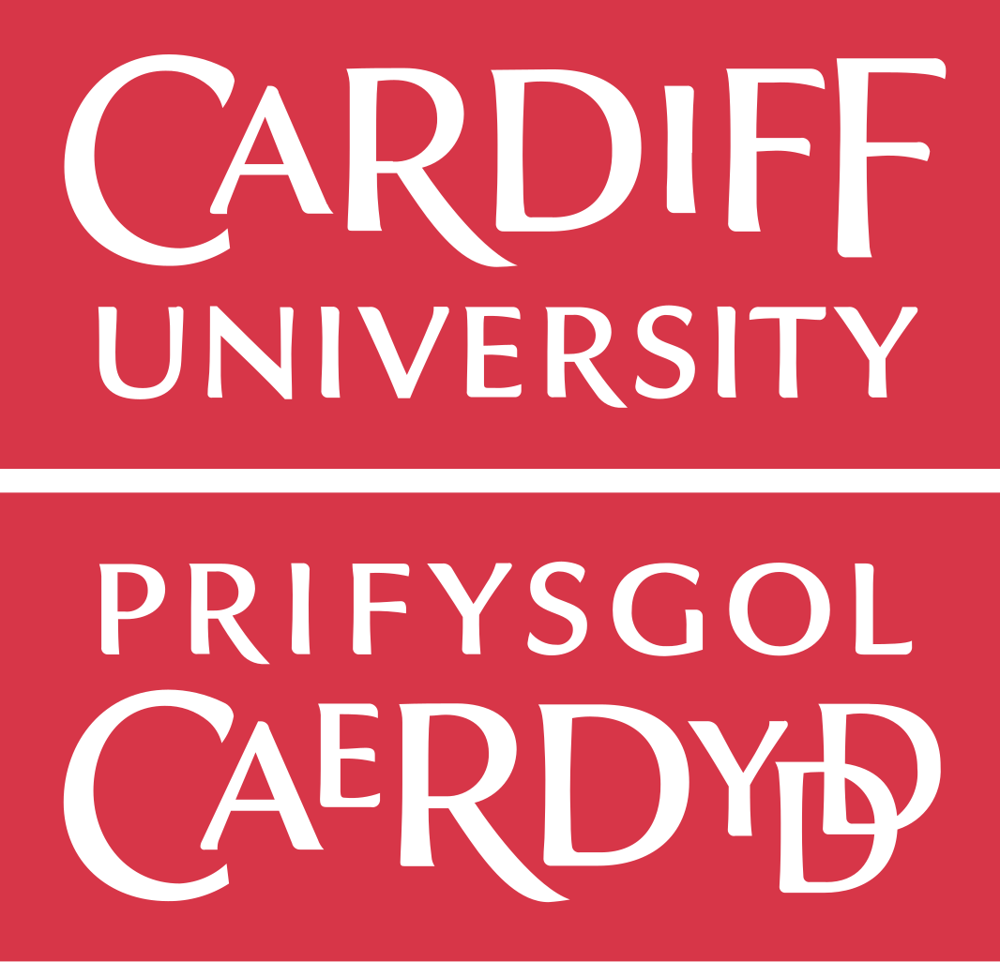

All seminars are held in Wolfson Lecture Theatre 4W 1.7 on Wednesdays 13:15-14:05.
The seminar schedule will be updated throughout the year and can be accessed on this page.
Upcoming Seminars
 25/03/2026 - TBC, Paola Iannone (University of Edinburgh)
Paola Inannone completed a first degree in mathematics at the University degli study di Roma La Sapienza (Rome - Italy) and PhD in Pure Mathematics the University of East Anglia (UEA). She was then appointed for three years as a Teaching Fellow in the Mathematics department at UEA, and later became a Senior Research Assistant in the School of Education still at UEA until she was appointed to a Lectureship in Educational Research in 2007 and then to a Senior Lectureship in 2012. She was a Senior Lecturer in Mathematics Education at Loughborough University in 2016. In 2023, she moved to the School of Mathematics at the University of Edinburgh to take up a Readership in the Technology Enhanced Mathematical Sciences Education group.
TBC
Previous Seminars
08/10/2025 - MathTASK: Challenging Students’ Discourses About Mathematics and its Pedagogy
Speaker: Irene Biza
Some mathematics undergraduate programs include in their syllabi also courses on mathematics education. The motivation for such courses is to introduce mathematics students to the field of mathematics education research or/and to prepare them for mathematics teaching. Research in mathematics education, however, is a very different enterprise from research in mathematics. For example, in mathematics education, much research focuses on human interactions and the social, cultural and educational contexts in which these interactions take place. While there is some attention to mathematical errors students make, there is also more focus on the reasons behind the error. Approaches are more relativist on what constitutes knowledge and evidence is not in the form of ‘proof’ as we know in mathematics. Balancing attention to the practices of mathematics (what I will call mathematical discourses) with attention to the practices for the teaching and learning of mathematics (what I will call pedagogical discourses) is an exciting challenge. In this session, I will discuss how I address this challenge in a course that introduces mathematics education to undergraduate mathematics students. Specifically, I will share examples of course activities that draw on the principles of the MathTASK, a research and development programme that I co-lead at UEA. In MathTASK, we engage teachers or students with fictional but realistic classroom situations and ask them to reflect on these situations (we call these activities “mathtasks”). We will discuss one or more mathtasks inspired by current debates on the impact of genAI on students’ development of mathematical problem-solving skills.
 19/11/2025 - Flipping the Foundations, Robert Wilson
Speaker: Robert Wilson
This presentation will discuss a reimagining of a large, core, undergraduate mathematics module by implementing a flipped learning approach. Specific focus for the session will include:
- the rationale behind the change;
- highlighting examples of the activities and resources developed;
- the impact on learners (and facilitators);
- potential future enhancements and challenges.
There will also be significant opportunity to discuss and debate the ideas raised in further detail.
13/11/2024 - Statistical Models For Improving Maths Tests
Speaker: Adam Coates
In virtually all teaching contexts where instructors design their own classroom assessments, a combination of common-sense, intuition, and heuristics are used to decide whether the test was fit for purpose. There are, however, methods from the field of psychometrics which can be used to more objectively judge whether a test is working well and indicate areas for potential improvement. This seminar will first outline common practices in university assessment, then introduce item-response theory and diagnostic classification modelling as tools which can be used to improve these practices.
20/11/2024 - HEA Fellowships in Maths
Speaker: Waleed Ali
This session will be open to everyone; staff, postgraduate students and anyone involved in teaching or teaching-based leadership roles. I will be giving an overview about applying for HEA Fellowships, especially after the release of the new specifications that will take effect in January 2025. The session will cover all the requirements for applying for the different HEA accreditations that the university provides (Associate Fellow, Fellow and Senior Fellow); following, there will be a Q&A session where I’ll answer any questions you might have about the accreditation process.
26/02/2025 - Filling the Gap: Finding Your Niche
Speaker: Kat Phillips
As academics we are continually taught to push the boundaries on current knowledge with our research, through either seeing where improvements can be made with current methods or scoping out underserved areas of the field. This attitude, combined with the ethos of ‘keeping things fun’, has served me well not only in my research, but in the rest of my life as well. Alongside my PhD I began developing my career as a maths communicator and academic advocate under the name ‘KatDoesMaths’. In this talk I want to share with you some of the projects I’ve created and been involved with, and the things I learnt along the way (including the good, the bad, and the ugly!) I will also highlight some useful tips and tricks that have been invaluable to me in all styles of communication practice.
26/03/2025 - Understanding and Promoting Meaningful Learning Experiences in Undergraduate Mathematical Education
Speaker: Cathy Smith
Mathematics lecturers rarely have a background in education theory, nor the time to learn how to read it. But without awareness of theory, our scholarship of teaching and learning can be limited in its criticality and its comprehensibility to others. This seminar offers a gentle introduction to one theoretical framing of learning – Garrison’s Community of Inquiry - chosen because it has been widely used to analyse blended and online learning, including in some of my own work. At its simplest, the framework suggests attending to the three dimensions of social, teaching and cognitive presence in an educational situation. The seminar will cover definitions of these dimensions, some examples (from 2018 onwards) of how I and others have used it specifically in mathematics, with time for thoughts and questions about its relevance and/or limitations.
01/11/2023 - Interactive Mathematics with VisualPDE
Speaker: Ben Walker
Ben introduces us to VisualPDE, an online resource he has developed for exploring, teaching, and broadly communicating partial differential equations. This resource is already being used in universities in the UK and worldwide and hopes to bring rich interactivity to a subject where there are often high barriers to entry. Unlike most seminars, Ben encouraged participants to bring along a smartphone, tablet or laptop to the session, so that they could interact with the site and play with PDEs, live on their device.
15/11/2023 - Generative AI in Mathematics Teaching & Learning
Speaker: Ben Adams
Ben will present a summary of some recent articles that explore the performance of generative AI on school and university mathematical problems. This may be a first step towards understanding the role of generative AI in our own teaching and assessment practice.
13/12/2023 - Promoting Participation With Statistics: Innovations for Teaching
Speaker: William Kay
Statistics is a key skill for bioscience students, but for this audience, learning statistics is typically challenging. Many students suffer from “statistics anxiety”, and tackling this is barrier to learning is hence a priority. In Cardiff University’s School of Biosciences, we are working to design a remodelled “spiral curriculum” for biostatistics. In this seminar I will present some of the new pedagogic approaches that I have been developing to facilitate this approach, as well as the ways that I am working to mitigate and overcome statistics anxiety in our students. These approaches include embedding statistics in biological practicals and assessments, providing tailored support at Undergraduate Data Clinics, and designing “Statistics Shorts”. More broadly, I will touch on several other of the pedagogic approaches that have been shown to make statistics not only understandable, but also enjoyable. Finally, I will share some insights into my own (challenging) history of learning statistics, and highlight how an empathetic and compassionate approach can make all the difference.
28/02/2024 - Making Mathematics Lectures More Engaging
Speaker: Lara Alcock
This talk will cover 18 simple practices that can be used to make ordinary mathematics lectures more engaging. It will start with general principles and organisational matters, then provide illustrations of short, snappy in-lecture activities that can be adapted for any topic. These activities require minimal planning, they work individually or together, and they can be incorporated into lectures in standard ways. They are also aligned with research on effective learning, and the talk will include light-touch comments on related research evidence.
13/03/2024 - How to Start in the World of Mathematics Education Research
Speaker: Evi Papadaki
Navigating the world of Mathematics Education Research as a novice can feel both exciting and confusing at the same time. The aim of the talk is to map out the field of Mathematics Education Research through a collection of examples and personal experiences. First, I will highlight what sets Mathematics Education Research apart from Educational Research. I will aim to answer questions I had as a newcomer with practical examples. Then, we will work together on finding ways to embed practice-based research in our teaching practice. We will consider personal interests in conjunction with practical limitations such as time and resources. Finally, I will conclude with tips and resources that could help you find your own path.
27/03/2024 - How to Think Like a Mathematician
Speaker: Kevin Houston
In this talk, Kevin will speak about the transition from school to university-level mathematics and highlight the reasons why it can be a daunting journey for many students. This talk aims to provide insights into what Kevin has done to ease this transition for his students. He will explore the key differences between school and university mathematics and describe practical strategies for teaching logical thinking, dealing with proof, and presenting mathematics in oral and written forms.
10/04/2024 - Students as Agents of Change: Partners & Researchers
Speaker: Martyn Parker
In this talk, I will explore how we developed and deployed our department’s new Student Engagement and Community strategy. The strategy aims to create a culture of opportunities to ensure our students are fully active participants in various decision-making, initiatives, and projects, including developing and enhancing their experience and community. The work has supported individual, curriculum, community, and departmental developments that connect our students with, for example, research, other departments, and university decision-makers.
This strategy has proved fruitful in engaging students in research projects driven by external and regulatory priorities. Discipline-specific pedagogy can be overlooked in these cases, but these projects provide a solid evidence base for informed judgements. I will highlight a few successes delivered by our student researchers and the benefits this approach has brought to the department and institution.